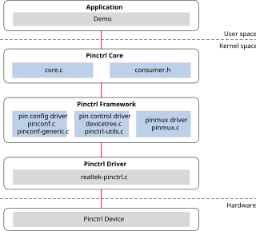
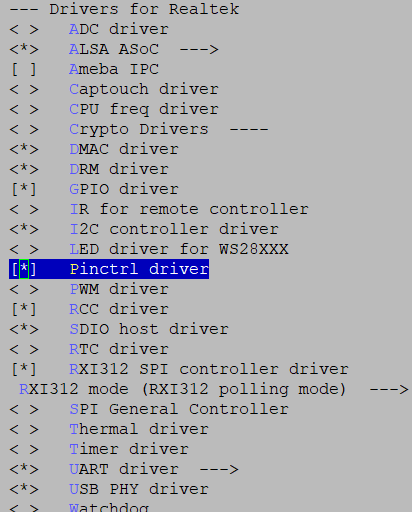

Pin 控制器 (Pinctrl)
介绍
架构
pinctrl 驱动程序遵循 Linux 的引脚控制子系统。引脚控制子系统处理以下内容：
枚举和命名可控引脚。
引脚、焊盘、引脚指等的复用。
配置引脚、焊盘、引脚指等，例如通过软件控制特定引脚的偏置，如上拉/下拉、开漏、负载电容。
下面展示了 pinctrl 的软件架构。
{kind=link}

参考 pinctrl driver v5.4 或者 pinctrl driver v6.6 获取更多有关 Linux pinctrl 系统的细节。
实现
pinctrl 驱动程序实现在以下文件：
配置
设备树配置
pinctrl 有关的设备树在 <dts>/rtl8730e-pinctrl.dtsi。
pinctrl 驱动程序设备树配置
pinctrl 的父部分列在下表中。
属性 |
描述 |
默认值 |
可配置？ |
|---|---|---|---|
compatible |
IR 驱动的描述。 |
realtek,ameba-pinctrl |
否 |
reg |
IR 设备的硬件地址和大小。 |
<0x42008A00 0x120> |
否 |
address-cells |
表示子节点地址长度，单位为 32 比特。 |
1 |
否 |
size-cells |
表示子节点长度，单位为 32 比特。 |
1 |
否 |
pinctrl 是一种平台总线设备驱动模型。在 Linux 内核中，当一个平台设备和平台驱动程序匹配时，在执行其驱动/总线探测之前，Linux 内核会自动执行设备和 pinctrl 子系统的绑定，并自动配置相应的引脚功能和特性。
其他驱动程序的 pinctrl 配置
支持其他驱动程序的方法是在 pinctrl 节点下定义一个子节点。格式为：
[driver_name]_pins_[pin_name]: [abbreviation]@[pin_num] {
pins {
pinmux = <REALTEK_PINMUX('[A/B/C]', [pin_num], [hardware_driver_id])>,
<REALTEK_PINMUX('[A/B/C]', [pin_num], [hardware_driver_id])>,
<REALTEK_PINMUX('[A/B/C]', [pin_num], [hardware_driver_id])>,
<REALTEK_PINMUX('[A/B/C]', [pin_num], [hardware_driver_id])>;
bias-pull-up;
slew-rate = <0>;
drive-strength = <0>;
};
};
如果用户需要添加更多引脚（这里以两个引脚为例），格式为：
[driver_name]_pins_[pin_name]: [abbreviation]@[pin_num] {
pins1 {
pinmux = <REALTEK_PINMUX('[A/B/C]', [pin_num], [hardware_driver_id])>,
<REALTEK_PINMUX('[A/B/C]', [pin_num], [hardware_driver_id])>,
<REALTEK_PINMUX('[A/B/C]', [pin_num], [hardware_driver_id])>,
<REALTEK_PINMUX('[A/B/C]', [pin_num], [hardware_driver_id])>;
bias-pull-up;
slew-rate = <0>;
drive-strength = <0>;
};
pins2 {
pinmux = <REALTEK_PINMUX('[A/B/C]', [pin_num], [hardware_driver_id])>;
bias-pull-up;
swd-disable;
slew-rate = <0>;
drive-strength = <0>;
};
};
“[]”中的描述应由驱动程序指定。
[driver_name]_pins_[pin_name] 将在驱动程序向其自身设备树节点添加 pinctrl 时使用。
[A/B/C] 代表 PA、PB 或 PC 组，详情请参考引脚复用硬件信息。
PA1 的 [pin_num] 是 1，详情请参考引脚复用硬件信息。
[hardware_driver_id] 可以在
<sdk>/sources/kernel/<linux>/include/dt-bindings/realtek/pinctrl/realtek-ameba-pinfunc.h中找到。每一个在realtek-ameba-pinfunc.h中的 [hardware_driver_id] 都映射到其硬件功能。例如：在添加 I2C 引脚复用时，只需在此处使用 I2C 宏。
属性的其他描述列在下表中。
属性 |
描述 |
可配置？ |
|---|---|---|
pinmux |
定义引脚组、编号和功能。 |
是 |
pull type |
拉低拉高类型，可以设置为以下其中之一：
|
是 |
slew rate |
PAD 转换速率控制，可以设置为 0 或 1 |
0/1 |
drive-strength |
PAD 驱动能力控制，可以设置为 0 或 1 |
否 |
swd-disable |
禁用 pad SWD 功能 |
可选 |
audio-share-enable |
禁用 pad 音频功能 |
可选 |
备注
Pins 表示一组引脚功能和属性。如果设备有多个属性，子节点可以被命名为 pins1、pins2……而不是 pins。
如果 PA13 或 PA14 未用于设置 SWD 功能，则需要添加属性 swd-disable。
如果 PA18 到 PB6 没有设置为音频功能，则需要添加属性 audio-share-enable。
pinctrl 引述
驱动程序的引脚复用（pinmux）是特定于板子的。为特定的驱动程序配置引脚复用时，步骤如下：
在目录 <dts> 中通过板子的名称找到特定的板级设备树。例子：对于256M nand通用板，设备树文件为
rtl8730elh-va8-xxx.dts。找到该驱动程序 [driver_name] 的完整名称，例如 i2c0。
添加 pinctrl 引述：
&[driver_name]{ pinctrl-names = "default"; pinctrl-0 = <&[driver_name]_pins_[pin_name]>; };
[driver_name]_pins_[pin_name]: 参考 其他驱动程序的 pinctrl 配置
将会有多个引脚复用组，它们具有不同的 [pin_name] 但相同的 [driver_name]。请根据板子的布局选择正确的组。更多细节请参考硬件用户指南。
如果特定的引脚复用没有在 pinctrl 设备树中列出，请找到相应的 [driver_name]，并根据 其他驱动程序的 pinctrl 配置 中的指导修改 [A/B/C] 和 [pin_num]。
当存在多个引脚控制状态和 phandle 列表时，需要按如下方式配置节点：
&[driver_name]{
pinctrl-names = "default", "sleep";
pinctrl-0 = [driver_name]_pins_[pin_name]>;
pinctrl-1 = [driver_name]_pins_[pin_name];
};
编译配置
选择 :
{kind=link}

APIs
用户空间的 APIs
无。
内核空间的 APIs
项 |
描述 |
|---|---|
pinctrl_get |
检索设备的引脚控制句柄 |
pinctrl_put |
减少之前声明的引脚控制句柄的使用计数 |
devm_pinctrl_get |
资源管理 |
devm_pinctrl_put |
资源管理 |
pinctrl_loopup_state |
从引脚控制句柄中检索状态句柄 |
pinctrl_select_state |
选择/激活/编程硬件的引脚控制状态 |
pinctrl_get_select_default |
检索设备的引脚控制句柄，并将引脚控制句柄设置为默认状态 |
pinctrl_get_select |
检索设备的引脚控制句柄，并将其设置为选择状态 |
devm_pinctrl_get_select_default |
资源管理 |
devm_pinctrl_get_select |
资源管理 |
devm_pinctrl_register |
|
pinctrl_register |
注册一个 pinctrl |
pinctrl_unregister |
注销 pinmux |
为了使用 pinmux，你可以按照下面步骤执行：
请求全部 pinctrl 资源。
devm_pinctrl_get_select_default(dev)
获取 pinctrl 句柄。
pinctrl = pinctrl_get(dev);
从引脚控制句柄中检索状态句柄，例如“default”状态。
pinctrl_lookup_state(pinctrl, "default");
选择一个 pinctrl 状态到硬件。
pinctrl_select_state(pinctrl, state);
释放 pinctrl 句柄。
pinctrl_put(pinctrl);
参考 pinctrl driver api v5.4 或者 pinctrl driver api v6.6 获取更多细节。